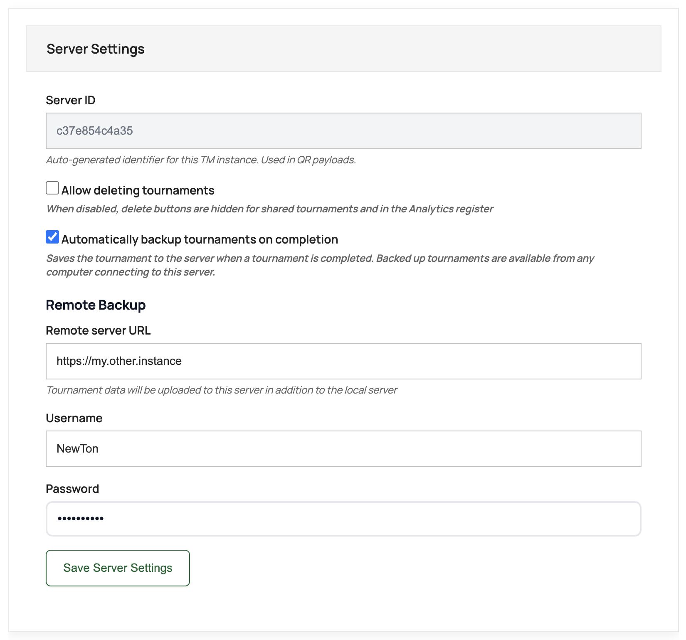

Save completed tournaments automatically — locally and to a remote instance.
NewTon is offline-first — everything is stored locally in your browser. This works brilliantly for running tournaments without an internet connection, but it means tournament data lives on one machine.
Automatic Backup bridges the gap:
Here is how our club uses it:
At the venue, we have a dedicated computer for the Tournament Manager. It comes out for each tournament, then goes back in the storage locker. Internet at the venue is spotty, so we rely on the offline functionality — the Tournament Manager runs without a connection.
At the end of a tournament, whatever internet connection we have is enough to upload the completed tournament to our online instance. This instance runs in Analytics Mode — a read-only view of all tournament data.
Once uploaded, anyone can open the online instance on their phone and access the full stats — cross-tournament leaderboard, player rankings, match history, achievements — all from their pocket.
When Automatically backup tournaments on completion is enabled, finalizing a tournament saves the complete tournament data as a JSON file to the server’s persistent storage (as configured in your Docker Compose volume mounts).
Saved tournaments appear in Shared Tournaments for all visitors on that instance. They can be imported to Recent Tournaments manually. Analytics picks them up automatically — every completed tournament becomes part of the cross-tournament statistics for everyone who visits the site.
Duplicate protection is built in — uploading a tournament that already exists on the server will not overwrite the existing copy.
In addition to the local backup, tournaments can be uploaded to a second instance at the moment of completion. The venue computer saves locally and pushes to the online Analytics instance in one step.
The upload happens immediately. If there is no internet connection at that moment, the upload will not succeed — use the manual fallback instead.
The receiving instance needs NEWTON_API_ENABLED=true in its Docker configuration. Authentication is handled via basic auth (htaccess). No other configuration is required on the receiving end.
In Global Settings, scroll to Server Settings:

https://my.other.instance)That’s it. The next time a tournament is finalized, it will be saved locally and uploaded to the remote instance automatically.
The remote instance is typically configured with NEWTON_MODE=analytics in Docker. In Analytics Mode:
See the Docker Quick Start for environment variable reference.
If the internet connection is unavailable at the moment of tournament completion, the remote upload will not succeed. In that case:
Manually imported tournaments are also added to Shared Tournaments on the receiving instance, just like automatic uploads. The same duplicate protection applies.
The local backup still happens regardless of internet connectivity — only the remote upload is affected.
NEWTON_API_ENABLED=true — the API must be enabled on both the sending and receiving instances.NewTon DC Tournament Manager — offline at the oche, online for everyone else.